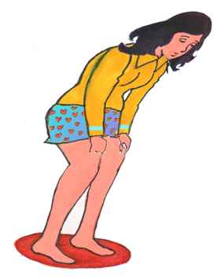
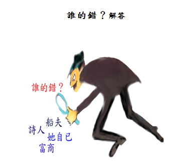

誰的錯?

前些日子我參加一對夫婦的宴會，席中有一位貴賓是心理學教授。飯後，
大家圍坐客廳閒談，那位教授講了一篇愛情故事。娓娓道來，大家入神聽着。故事是這樣的。
A城與B城，分處河的兩岸，中間僅以一座木橋相通。A城住著一位年輕美麗的少婦，嫁給一位年長的富商。幾年後，她發現丈夫熱衷事業，對她冷落，於是她開始另找愛情。
她毫無困難的認識在B城的一位年輕英俊的詩人，每天早上10點，她都赴B城約會，但總是在丈夫下午4點她先生回家前，駕
車過橋，趕回。一天下午，山洪爆發，河水暴漲，沖走了兩岸間唯一的木橋。因此她不能趕在丈夫回家前駕車過橋回來。
唯一返家的辦法，是搭乘下游的渡船。她匆忙趕到碼頭，打開皮包，掏錢買船票時，發覺分文未帶。船夫是位年輕的小伙子，她偶爾沒有開車走路去與情人約會時，也搭他的船。算與她有些認識，相信會讓她賒欠。沒想到這位年輕的船夫，格於船主的規定，無法破例讓她賒欠，並說：實在是船主的規定，愛莫能助。
萬般無奈之下，她急得只有折回情人家，向他要100元渡船費，然而，她的情人堅決拒絕她這個要求，說道：「妳難道不明白嗎？我愛妳甚於一切，如果我給你100元，那我們之間的關係，就變成什麼了？即使是100塊錢，都會破壞了我們之間的關係，也許妳覺得這種論調的可笑，但若是堅持要這100塊錢，我們之間就永無見面機會了。」
她盛怒之下，立即衝出，開車再度回到河邊，但見河浪滔滔，既恨情人之虛偽，又懼丈夫的責罵，一橫心，往河裏跳下去。第二天，屍體被撈起，可憐的少婦年紀輕輕就喪失一條寶貴生命。
各位！你覺得這位少婦的死，誰應負最大的責任？教授問。

坐在中間一位富商模樣的中年紳士，說道:「這個少婦，咎由自取。她應該為自己的行為負責，在作這類無恥的事以前，她就應該想到這種惡果！」
我們的男主人，猶豫了一下，發表了不同的意見：「我們都知道，婦女們情感衝動，大部分不能對她們自己的行為負責。從另一個角度看，我以為那個擺渡的小伙子，在這個決定性的時刻，面臨一項重大抉擇；不但不知通權達變，反而將責任推給不在場的老板，這種道義上的儒弱，導致了他這種不可原諒的行為。」
我們的女主人不以為然，她說：「你們男人就是這樣！任何女人都知道被丈夫冷落的滋味，如果，不是先生的冷落，相信她絕對不會去愛別人，同時，如果不是他使她覺得懼怕，她也不會急著回家，這種男性至上的偽君子，怎麼沒有會沒有錯呢？」
一位公司經理辯解道：「船夫祇不過是盡他應盡的職責；不賒欠是他對僱主的一項承諾，必須遵從。倒是那位可愛又可恨的情人，行為似假道學，他的自私和自以為是的羅曼蒂克觀念，等於為這位少婦判了死刑，這種教條主義者，食古不化，應該受到嚴厲制裁。」
坐在最旁邊，一位穿著時髦的妙齡少女，慢慢說道：「話說回來了。這位少女能不能打電話告訴先生，今晚在一位女朋友家過夜？或是向別人借100塊錢？或哄她的情人，放棄那種愚笨的想法？同時，年輕的船夫真能擋得住她的撒嬌嗎？所以辦法多的是，為何她不用呢？我們為什麼老是在道義上繞圈子？為何不由另外一個角度，去看這個問題呢？」
眾議紛紛，莫衷一是。最後，大夥兒請教心理學教授。
教授答道:「也許每個人都要負責，究竟誰應負最大責任?我不感興趣。但是由大家的答案，我可以或多或少的知道每個人的性格和在社會上所扮演的角色，也許由上述的討論中，大家已經注意到了!」
從這他們回答問題的性格，我認為如下，你認為如何？
1． 與中年紳士意見相同者，認為一個人的行為要自行負最大責任，別人最多只能從中幫忙。
2． 與男主人意見相同者，痛恨遇事推諉給第三者，不敢勇以負責的人。
3． 與女主人意見相同者:認為一件事情之發生，最先引發者要負最大責任。
4. 與公司意見相同者，認為凡事沒有不變真理，不可食古不化，許多價值觀可 隨時空改變而重新衡量。
5．與妙齡少女意見相同者，認為生命是可貴的，不可隨意輕生。